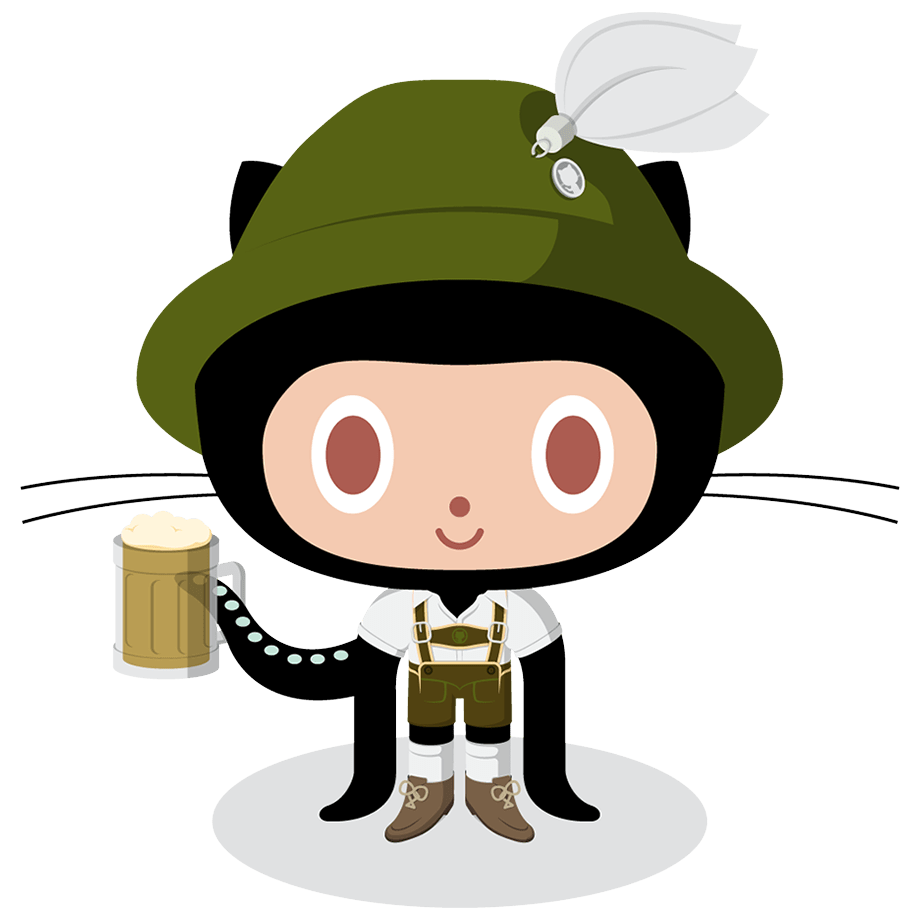

Progetti
Di seguito stanno alcuni progetti fatti nel tempo libero:Book club tracker [Repo] [Demo]
Una PWA minimale che consente a un piccolo club di lettura di poter seguire la progressione della lettura di tutti i membri.
Mostra di più...
Ricerca stoica [Repo] [Demo]
Home page del browser minimale con barra di ricerca (DuckDuckGo), barra dei preferiti (dati salvati su LocalStorage) e una citazione diversa per ogni giorno dell'anno di Marco Aurelio per ravvivare l'umore.
Mostra di più...

Bud-dot [wip]
Un giochino con l'API di OpenAI.